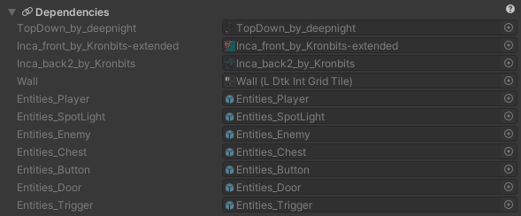
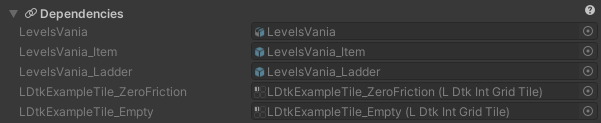

Dependencies Section
Dependencies ensure to keep your LDtk asset updated when these dependencies change.
This section lists all of the dependencies for the inspected project/level.
When an LDtk project or level depends on an asset, then the project/level will reimport when a particular dependency is changed.
If any of these dependencies save changes, then this LDtk asset will automatically reimport.
Project Dependencies
If separate level files are not used, projects will add dependencies for tileset textures, level background textures, custom level prefab, IntGrid tiles, and entities.

If separate level files are used, projects will add dependencies for tileset textures only, and all other assets will be depended on by the levels instead.
Level Dependencies
This section is also listed in the importer inspector for separate level files.

If separate level files are used, then the level background textures, custom level prefab, IntGrid tiles and entity dependencies will not be depended on in the project, and are instead depended on by the levels.
Levels will also have a dependency on the source project asset.
Any dependencies in levels are smartly depended on; only the IntGrid tiles and entities that are involved inside a level are depended on.
For example, the image above for the level will only depend on Item and Ladder because they are the only type of entities existing in this particular level. Whereas a project without separate levels files would depend on all used assets.